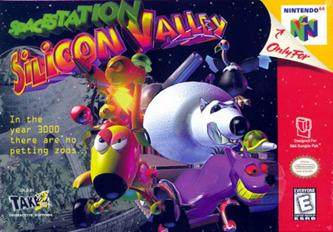
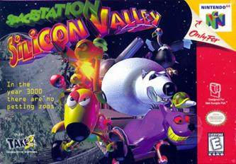

Summary
Timebox One consistent primarily of thinking of ideas on how we wanted to implement our game. We tossed around a few different genres before deciding on a platform/puzzle game. We drew inspiration from games like Super Mario 64, Space Station Silicon Valley, and Legend of Zelda: Breath of the Wild. We met three times a week to discuss our ideas, assign issues, and keep everyone updated on the progress we were making.
 


Concept Designs & Ideas
We had a lot of ideas on how we wanted to implement our code and what the levels would look like. To help with code quality, we drew a diagram that outlined the animal interfaces. Additionally, we also drew out a rough idea of what the tutorial level would look like.
Additionally, below were more documents that helped to outline our game including a game state diagram and brainstorming on more animal abilities:
What We Accomplished
For Timebox One, we were able to complete all the requirements listed as well as start on some features for Timebox Two. This included creating a Logo, Main Menu, Level Select, Game Over, and Loading screens which can be seen below. We also implemented player controls, character animations, collisions, and the ability to record or take a screenshot during game play.
Additionally, we worked on finishing the tutorial level by setting up the tutorial level and developing the first puzzle. The wire puzzle's objective is to connect the wires together in order to lower the draw bridge to the next scene. The wire puzzle will be used in other areas of the game, and increase in complexity by having a larger grid and more components. We also started working on laying out the giraffe enclosure, which we intend to finish for Timebox Two.
We also worked on player controller and character animations. Below is a clip of the mechanics for the player interacting with objects. We also added a draw bridge to the tutorial scene, which is lowered once the player completes the wire puzzle.
Roadblocks
We encountered some roadblocks throughout Timebox One that we hope to address during Timebox Two. These include:
- Adding animations to the animal models without the models moving during animation.
- Respawning the player in the same position after opening and completing a puzzle.
- Organization of files within our Unity project. We hope to address this by moving all imported assets to one folder and creating subfolders to organize scripts.
- Code quality. Our focus so far has been on functionality, but we hope to refactor our existing code as well as write better quality code going forward.
Team Organization
We use Github, Zenhub, and Discord as a team. Below is an example of what our Zenhub board looks like as well as some code metrics:
Additionally, these were our roles and responsibilities this Timebox:
- Maddy Carek: Video Recording, Scribe, Giraffe Exhibit
- Alex Chan: Player Movement, Level Selector, Pause Screen
- Von Mbah: Scribe, Level Design, Main Menu, Tutorial Level Setup
- Sara Miskus: Level Design, Logos, Loading State, Wire Puzzle
- Eric Sullivan: Camera Controls, Player Movement/Animations
- Jack Weiner: Scrum Master, Game Over State, Giraffe Exhibit
Future Plans
For the next Timebox, we aim to:
- Finish the giraffe exhibit
- Polish the tutorial level
- Produce more exhibit/animal ability ideas
- Handle level checkpoints and saving/loading games
- Implement enemies and dialogue states